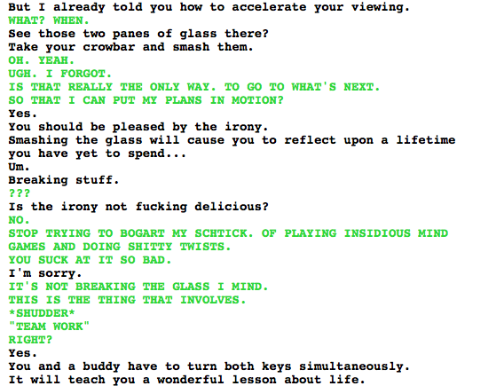

Soooooo…
By the time he’s Lord English, Caliborn is involved with lots of team work. He literally lives inside Doc Scratch and relies on him to prepare universes for him. He has followers, people he manipulates, and slaves. Seems like Caliborn ends up learning that lesson really well.